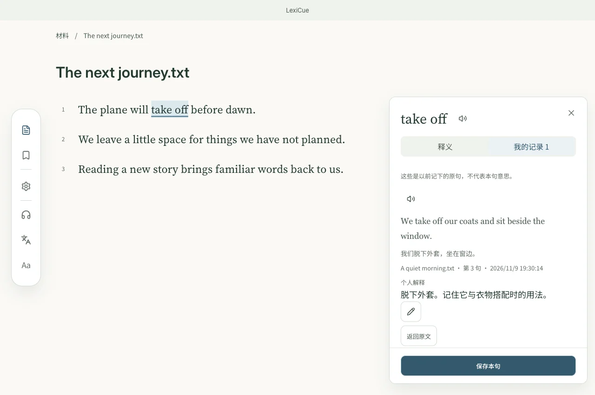
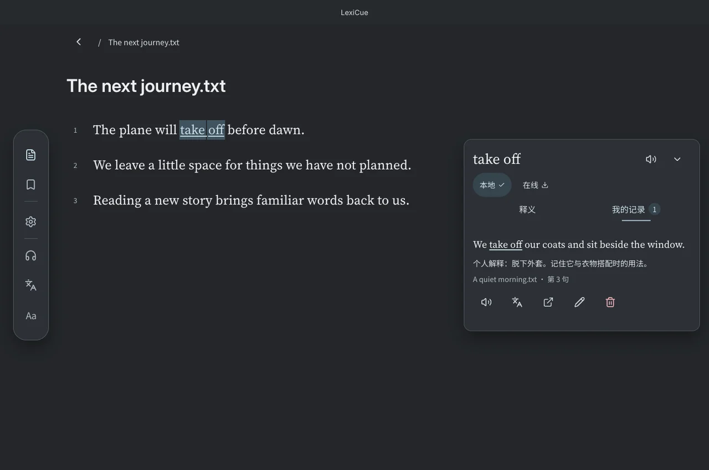

重遇回顾
让新的相遇，唤回以前保存的原句。
本页目录
遇见已保存的表达
已保存的表达匹配到后续阅读时会高亮。点开并查看过往记录，回顾原句、译文、释义和注释；它们来自过去的语境，不代表当前句子的含义。



自选回顾方式
对照过去与现在的用法，修改注释或返回旧来源。当前阅读流程没有到期卡片队列与评分步骤，早期定时复习记录仍保留在历史记录中。
让新的相遇，唤回以前保存的原句。
已保存的表达匹配到后续阅读时会高亮。点开并查看过往记录，回顾原句、译文、释义和注释；它们来自过去的语境，不代表当前句子的含义。


对照过去与现在的用法，修改注释或返回旧来源。当前阅读流程没有到期卡片队列与评分步骤，早期定时复习记录仍保留在历史记录中。